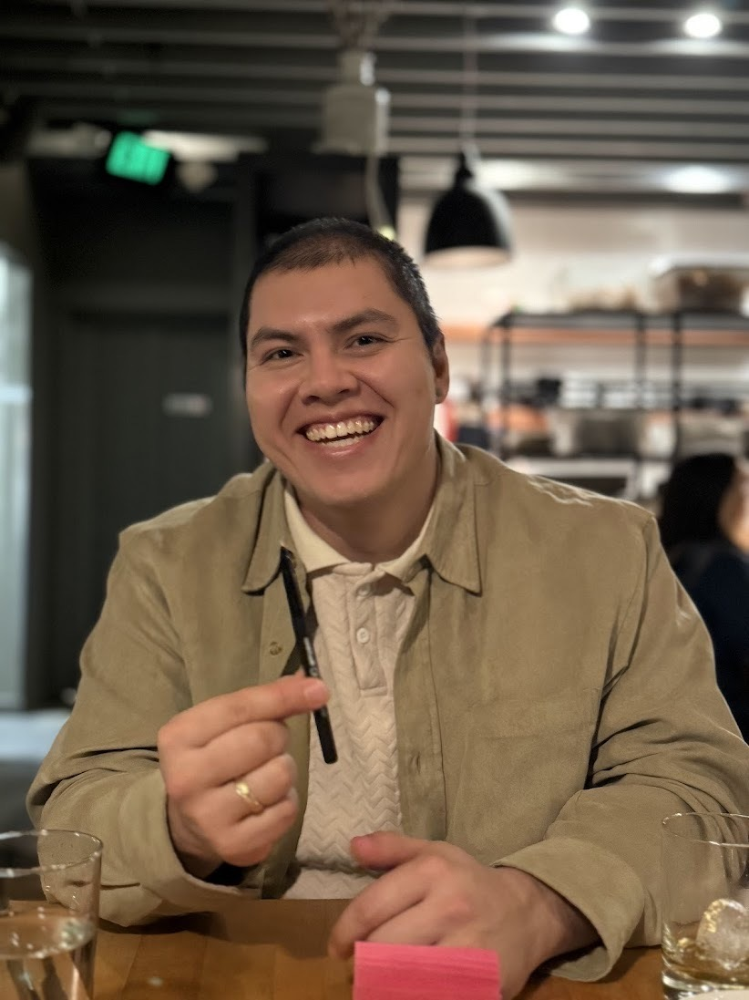

Coaching with Andrés

I coach people to create greater alignment between their work, health, and relationships.
Book an Intro CallAbout Me.
I’m an engineer, educator, and entrepreneur who’s obsessed with human development and helping others live joyfully fulfilled lives.
Before coaching, I spent a decade building things and trying to positively impact the world. My experiences range from building deep tech startups to global education programs. A few highlights:
ModernVivo — Director of Operations2025–2026
Led internal operations to accelerate the build of a literature intelligence platform for the design of preclinical drug studies across biotech, pharma, and academia. Launched a CRO marketplace to connect research scientists with vendors.
TKS — Global Program Director2022–2025
Coached 400+ students from 70+ countries through a 10-month tech accelerator. Advised student-led consulting projects for Google, Meta, Microsoft, and the World Economic Forum. Advised student non-profits and startups.
MIT — Instructor and Curriculum Designer2021–2022
Designed and taught a year-long Engineering Design curriculum for first-generation high school seniors at MIT. Taught students principles of human centered design, design thinking, and adaptive leadership. Coached students through the college admissions process.
Form Energy — Sr. Materials Engineer2021–2022
Built and led materials-testing operations for grid-scale batteries, helping scale the company from 30 to 300+ employees. Designed a novel, high-throughput characterization workflow used by hundreds of engineers and scientists.
UbiQD — Sr. Engineer and Project Manager2017–2021
Engineered quantum-dot solar window technology, published peer-reviewed research, secured $1M+ in NSF funding, and sent nano-materials into space in collaboration with Caltech. Co-invented a quantum-dot enabled greenhouse film technology shown to boost crop yields by up to 30%.
NeuroLux — Product Design Engineer2015–2017
Designed first-of-a-kind wireless optogenetic research tools funded by the NIH, used by scientists across the U.S. Tested our systems in vivo and supported neuroscientists using NeuroLux tools at the University of Washington, WashU, Northwestern, UIUC, and beyond.
I have also volunteered to coach students and lead national programming through the Hispanic Scholarship Fund and Big Brothers Big Sisters of America. I am also a musician and a poet.
I Help People…
- Experience greater satisfaction and ease in their current professional roles.
- Create balance between their current work and life priorities.
- Find and transition to new jobs that feel more aligned with their values.
- Build non-profits, start-ups, or grassroots community organizations.
- Prioritize their physical health, mental wellness, and relationships.
- Avoid or recover from career burnout.
My Coaching Approach.
- Identify and articulate your values, based on your actions and desires.
- Set specific, measurable goals for your life and career ambitions.
- Build habits that will get you closer to your goal.
- Build habits that support wellness of mind, body, and spirit.
- Reflect on your processes and figure out what’s working and what’s not.
- Implement actionable feedback. Share new ideas for what to try next.
- Offer kind and firm accountability for your habits and goals.
- Remove blockers preventing you from taking action.
Pricing + What to Expect.
Book an intro call for us to discuss your life and career journey so far, and what you’re seeking from a coaching engagement. I’ll walk you through my approach and principles, and you can ask me questions about my coaching practice.
I offer coaching on a per-session basis. No need to lock in for an extended engagement. If you find a session valuable, book another one, or as many as you like. Each coaching session is 1 hour long.
I offer in-person sessions in Seattle, or virtual sessions beyond Seattle.
Investment:
- $150/session — company-funded rate
- $75/session — self-funded rate
*I’m happy to discuss alternative pricing and payment options. If you’re committed to putting in the work, I’m committed to making myself accessible to you.
Between sessions, I offer asynchronous support (feedback, thought partnership, accountability), but it’s on you to seek this out. If you want to focus all your attention on our sessions, that’s totally fine!
Fit Check.
I may be a good fit for you if:
- You’re ambitious and have capacity to work hard to achieve your goals.
- You’re open to direct feedback that’s actionable and aims to assist.
- You’re naturally reflective, but sometimes get stuck in analysis paralysis.
- You want to build something new and break the mold.
I may be a bad fit for you if:
- You don’t have time, energy, or attention to act on your habits and goals.
- You’re inflexible in your approach to building your career.
- You fundamentally disagree with my principles and values.
- Your primary goal is to make more money or gain greater career status.
What My Clients Say About Me.
Andrés was really supportive during our 1:1’s and never judgemental. I could always be open and honest with him about my weaknesses and mistakes, knowing he would understand and give feedback on how I could improve. This made him very open and approachable. He always helped me find solutions to problems I was struggling with and motivated me to become the best version of myself.
Andrés is kind yet firm in his coaching style. He calls me out on my bullshit. But, at the same time, is deeply supportive and compassionate. He gives golden feedback and suggestions on what to try every session! He’s fully dedicated to helping me grow and be better by checking on my progress and encouraging me to challenge myself.
Andrés is an outstanding coach who is deeply committed to helping me achieve my full potential. He is an inspiring leader who is passionate about innovation, entrepreneurship, and creating positive change in the world. He has a talent for connecting with people and providing guidance and support that empowers them to take their ideas to the next level!
Andrés pushed me to new heights. He poses a lot of great questions that make me reflect. My favourite was his insistence on the “why.” He’d ask me why when I wanted to back out of doing things that felt difficult. Truth be told, I was really scared of failing, but he got me to reflect more and improve my skills and confidence!
He’s changed my perspective on a lot of stuff, and I’ve seriously loved our 1:1s. It’s a time I look forward to every week. It’s so important to have a coach I can contact frequently to make sure I’m not giving up on where I want to go and who I want to be. He literally remembers every tiny detail from our coaching sessions. Whenever I’m stuck or lost, he helps me get back on track.
Andrés tailors his feedback according to my north star goal. He helps me bring structure to what I am doing both in terms of mindset and tactical organization. He provides a lot of direct, actionable feedback, which allows me to make faster progress toward my goals. He helps me look at my challenges differently and figure out what to try next.